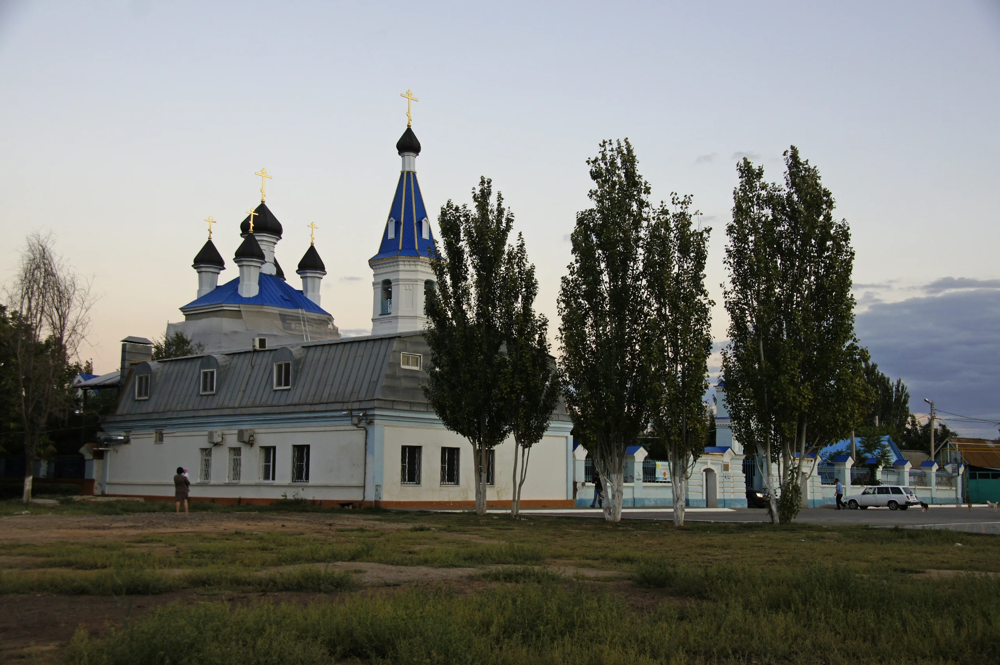
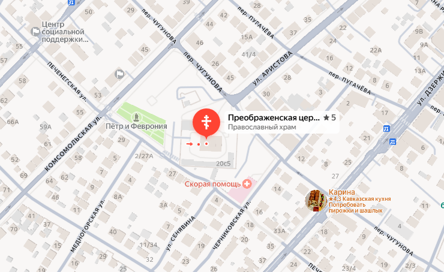

Первый деревянный храм в честь Преображения Господня начали строить в 1863 году в казачьей станице Городовой Форпост (позже, в 1893 году, переименована в Атаманскую). Основные строительные работы были завершены к 1865 году, и в том же году храм освятили.
В 1879 году встал вопрос о расширении деревянного храма. Разрешение было дано, но в 1882 году жители решили вместо расширения построить на том же месте новый каменный трёхпрестольный храм. Основные строительные работы были завершены к 1885 году.
Главный престол в честь Преображения Господня освятили 3 ноября 1885 года. Южный придел в честь иконы Божией Матери «Достойно есть» освятили раньше — 30 ноября 1883 года. Северный придел в честь святого пророка Ильи был освящён позже всех — 6 августа 1890 года.
В 1923 году храм пытались захватить обновленцы, но прихожане не пустили их в церковь. В 1938 году храм закрыли, уничтожили иконостас и настенную роспись, а купола глав и колокольни снесли.
В декабре 1943 года архиепископ Филипп (Ставицкий) начал переговоры с властями о возвращении храма. 13 января 1945 года Спасо-Преображенский храм был передан общине верующих. Однако местные власти установили вместо прежних луковичных куполов бесформенные колпаки, а также не восстановили второй ярус колокольни.
В 1992 году храм был передан в ведение Николо-Угрешского монастыря (Москва) и стал монастырским подворьем. В этот период был восстановлен облик куполов, приближенный к историческому. В 2011 году храм был возвращён Астраханско-Енотаевской епархии. В настоящее время в храме продолжаются реставрационные работы.
